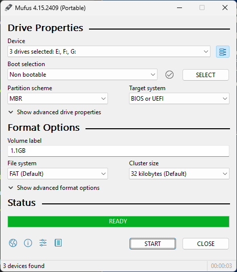
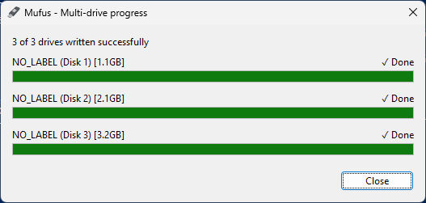
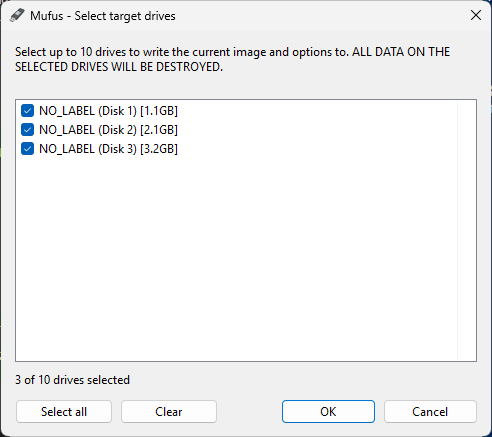

Based on Rufus 4.15
Create bootable USB drives the easy way. Up to 10 at once.
Mufus is Rufus, the Reliable USB Formatting Utility by Pete Batard, with one addition: a multi-drive mode that writes the same ISO or disk image to up to 10 USB drives at the same time. Everything else works exactly like Rufus.


Download
Latest release: Mufus 4.15, published .
System requirements
Windows 8 or later, 32 or 64-bit. Mufus needs administrator rights and asks for them when it starts, as Rufus does. There is nothing to install: just run the executable.
Windows SmartScreen
Mufus releases are not code signed, so Windows may say "Windows protected your PC" the first time you run it. Click More info, then Run anyway. You can check the SHA-256 above, or build Mufus yourself.
Updates
Mufus doesn't check for new versions of itself, so come back here or watch the Releases page from time to time.
Multi-drive mode
-
Plug in your drives
Up to 10 USB drives. They don't need to be the same size.
-
Select them
Click the multi-drive button at the end of the Device row, tick the drives you want and click OK. Click it again to go back to single drive mode.
-
Choose your image and press START
All the usual Rufus questions are asked once, for every drive, followed by a single confirmation that lists every drive about to be erased.
-
Watch them all write at once
A progress window shows the status of each drive, and tells you which ones succeeded when it's done. A drive that fails doesn't affect the others.

Good to know
- Same image and options for every drive. Defaults that Rufus derives from the drive, such as the cluster size or the size based volume label, are worked out for each drive, and every drive is checked before anything is written.
- Speed. The drives share your USB controllers and hubs, so writing several at once is faster than one by one, but each drive is slower than on its own. A powered USB 3 hub helps.
- Cancel stops every drive.
- Mufus and Rufus can't run at the same time, and Mufus keeps its settings separate from Rufus'.
Everything Rufus does
Single drive mode is unchanged from Rufus, and so is everything else:
- Format USB, flash card and virtual drives to FAT, FAT32, NTFS, UDF, exFAT, ReFS and ext2/3
- Create bootable drives from bootable ISOs: Windows, Linux and more
- Create BIOS or UEFI bootable drives, including UEFI bootable NTFS
- Create Windows 11 installation drives for PCs without TPM or Secure Boot
- Set up Windows installation options: local account, privacy settings and more
- Download official Microsoft Windows 8, 10 and 11 retail ISOs
- Create bootable drives from disk images, including compressed ones
- Create DOS bootable drives using FreeDOS or MS-DOS
- Create Windows To Go drives and persistent Linux partitions
- Create VHD/DD, VHDX and FFU images of an existing drive
- Compute MD5, SHA-1, SHA-256 and SHA-512 checksums of an image
- Check for bad blocks, including “fake” flash drives
- Validate UEFI bootable media at runtime
- Available in 38 languages
For help with these, see the Rufus FAQ: it applies to Mufus too.
Source code
Like Rufus, Mufus is Free Software, licensed under the GPL v3 or later. The full source code is on GitHub:
git clone https://github.com/ExecSam/Mufus.git
Build it with Visual Studio 2026 (or MinGW), as for Rufus. From a Developer Command Prompt:
msbuild rufus.sln /m /p:Configuration=Release /p:Platform=x64
With Visual Studio 2022, add /p:PlatformToolset=v143. Use /p:Platform=x86 for the 32-bit version.
How it works
Rufus keeps most of its state in global variables, so several copies of its formatting code can't run in one process. Mufus does all of the preparation work in the main application, then starts one hidden copy of itself per drive, each running the unmodified Rufus formatting code against its own drive.
Their logs, progress, prompts and results are relayed back to the main window, and the resources the drives would otherwise compete for, such as drive letters, temporary files and disk signatures, are coordinated between them.